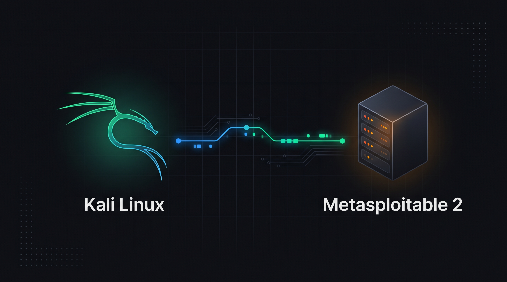

Homelab
TerminéPetit laboratoire isolé avec deux machines virtuelles, Kali Linux et Metasploitable 2, reliées par un réseau interne sans accès à internet. Cycle complet : scan de la cible avec Nmap, exploitation de la porte dérobée de vsftpd 2.3.4 avec Metasploit, correction de la faille, puis vérification en rejouant la même attaque.